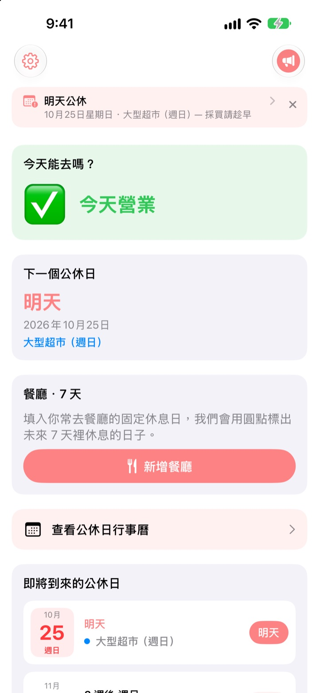
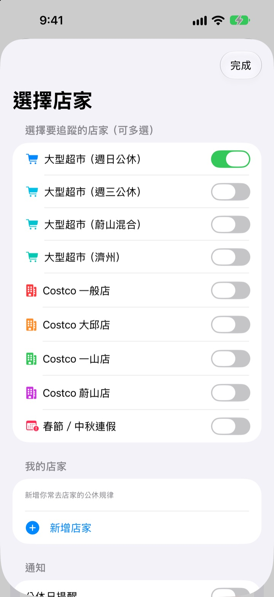
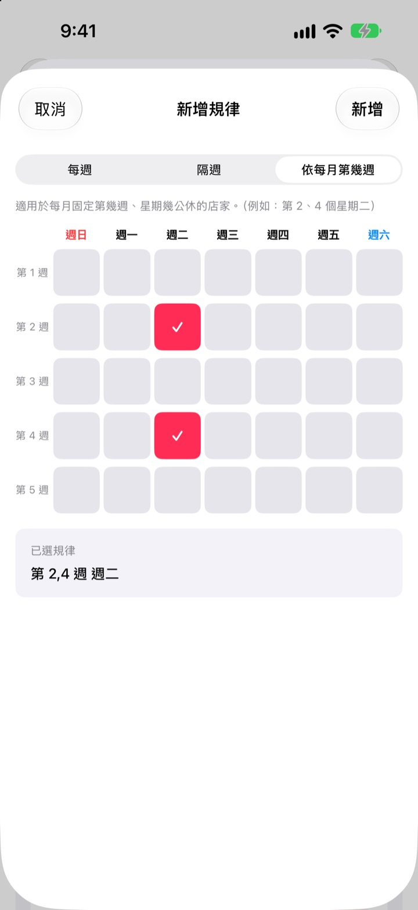
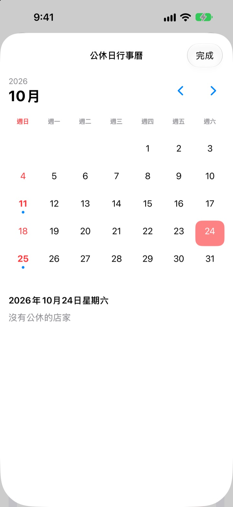
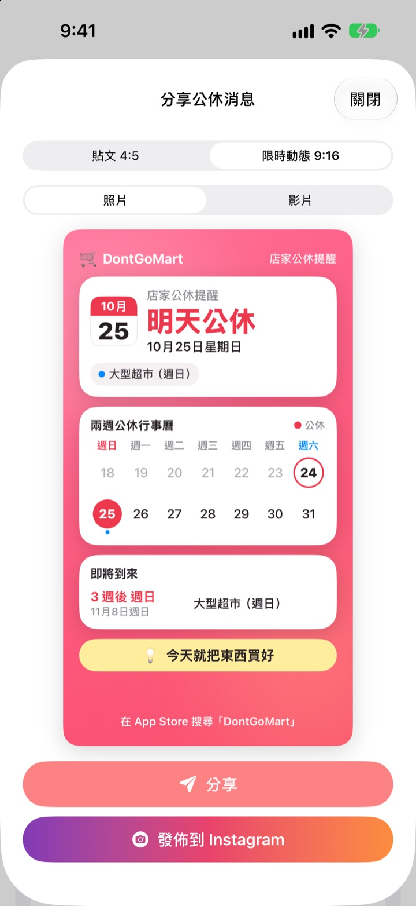

去超市之前，
先確認今天有沒有開
打開 App，第一眼就看到你選的門市今天有沒有營業。公休日快到時會提前提醒，再也不會撲空。
所有功能免費，不用帳號，沒有廣告。

用你常去的門市試試看
選一間門市，馬上看到今天有沒有營業、下一個公休日是哪天。計算規則和 App 完全一樣。
提著購物袋到了門口，才發現沒開？
韓國大型超市的強制公休日，有的是第二、第四個星期日，有的是星期三，蔚山和濟州又不同；Costco 每間分店也不一樣。DontGoMart 依照你常去門市的規則算出公休日，先告訴你今天能不能去。
各地不同的公休日都算得準
週日公休、週三公休的門市都有，蔚山、濟州這類公休日不同的地區也能選。Costco 一般店和大邱店、一山店、蔚山店可以分別選擇。
春節和中秋當天的公休也會顯示。可以同時追蹤多間門市。

家附近的超市和常去的餐廳也可以
清單裡沒有的門市，可以依每週、隔週或每月第幾週星期幾設定公休，新增成你自己的超市。
餐廳只要貼上從 Naver 地圖分享的連結，或選一張餐廳資訊頁的截圖，就會自動填好固定公休日。圖片裡的文字只在裝置上辨識。

用通知和小工具，不怕忘記
可在公休前 1、2、3、7 天中選擇，並在想要的時間收到通知。公休前一天還會再提醒你：今天適合去採買。
主畫面和鎖定畫面小工具能直接看到最近的公休日、本週日有沒有營業、餐廳未來 7 天的公休。月曆裡一個月的公休日一目了然。

一張卡片傳到家族群組
把公休消息做成附兩週月曆和採買小提醒的卡片傳出去。也能做成 Instagram 貼文和限時動態尺寸，或是短影片。

三個步驟就能開始
- 1
選擇門市
打開你常去的超市和地區，可以選好幾間。
- 2
開啟通知
設定提前幾天、幾點提醒。
- 3
放上小工具
不用打開 App，在主畫面或鎖定畫面就能看到。
各門市的公休規則
- 大型超市（週日公休）
- 第二、第四個星期日 · 大部分地區
- 大型超市（週三公休）
- 第二、第四個星期三 · 京畿部分地區、清州
- 大型超市（蔚山）
- 第二個星期三、第四個星期日
- 大型超市（濟州）
- 第二個星期五、第四個星期六
- Costco 一般店
- 第二、第四個星期日
- Costco 大邱店
- 第二、第四個星期一 · 大邱店、大邱革新店
- Costco 一山店
- 第二、第四個星期三
- Costco 蔚山店
- 第二個星期三、第四個星期日
- 春節、中秋
- 當天公休
強制公休日依地方政府條例規定，可能會變動。若與實際不符，請寫信告訴我們。
常見問題
公休日和實際不一樣。
大型超市的強制公休日依地方政府條例規定，各地不同。請在設定中確認選了符合所在地區的門市（週日公休、週三公休、蔚山、濟州等）。如果還是不對，請把超市名稱和地區寫信告訴我們，確認後會更新。
清單裡沒有我常去的超市怎麼辦？
可以新增為你自己的超市。依每週、隔週，或像第二、第四個星期日這樣設定第幾週星期幾公休，然後儲存。
餐廳的公休日沒有正確填好。
透過 Naver 地圖連結匯入時，餐廳的地點頁面上必須寫有固定公休日。用截圖匯入時，請讓「每週二公休」之類的文字出現在畫面上。填好的內容在儲存前都能手動修改。
收不到通知。
請在 iPhone 的「設定」>「通知」>「DontGoMart」確認已允許通知，並確認 App 內的公休日通知已開啟。
小工具沒有更新。
打開一次 App，小工具資訊就會更新。如果還是沒變，請移除小工具後重新加入。
贊助是什麼？
DontGoMart 的所有功能都免費。咖啡、蛋糕、正餐贊助是用來支持開發者的，贊助後會看到感謝訊息和顯示累計次數的支持者徽章。
付款（退款等）問題要問誰？
App 內購買由 Apple 處理，退款請到 Apple 的回報問題頁面（reportaproblem.apple.com）申請。其他問題歡迎寫信給我們。
個人資料如何處理？
沒有帳號，不使用廣告或追蹤工具，截圖裡的文字也只在裝置上辨識。詳情請看下方的隱私權政策。
有問題或建議，請寫信到 hyunho.lee.1993@gmail.com，我們通常 1～2 天內回覆。